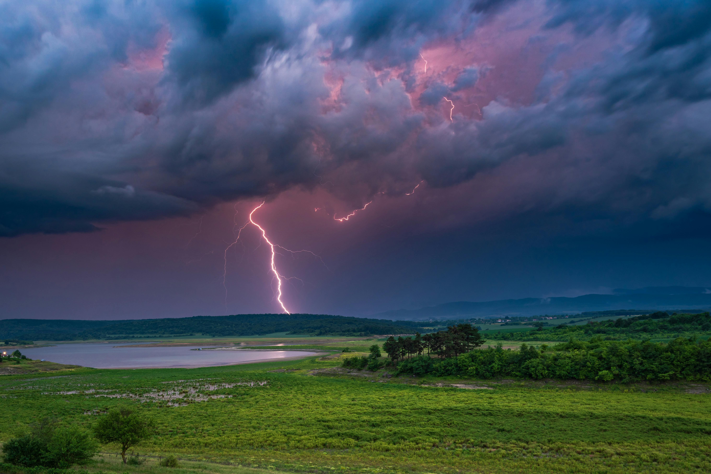

The Way of Kings
The first book introduces Kaladin, Shallan, Dalinar, and the dangerous world of Roshar.
An epic fantasy series by Brandon Sanderson
The Stormlight Archive is a major fantasy book series written by Brandon Sanderson. The story takes place on the storm-swept world of Roshar, where powerful storms, ancient orders, magical weapons, and deep character journeys all play an important role.
The series is known for its detailed worldbuilding, connected magic systems, and characters who struggle with leadership, responsibility, trauma, honor, and personal growth.

The first book introduces Kaladin, Shallan, Dalinar, and the dangerous world of Roshar.
The second book expands the Knights Radiant, the Shattered Plains, and the growing threat facing humanity.
The third book focuses heavily on Dalinar’s past and the meaning of responsibility and unity.
The fourth book explores science, war, leadership, and the continuing conflict on Roshar.
You can learn more about the author and his books by visiting the official Brandon Sanderson website .
Enter your name below to receive a personalized welcome message.